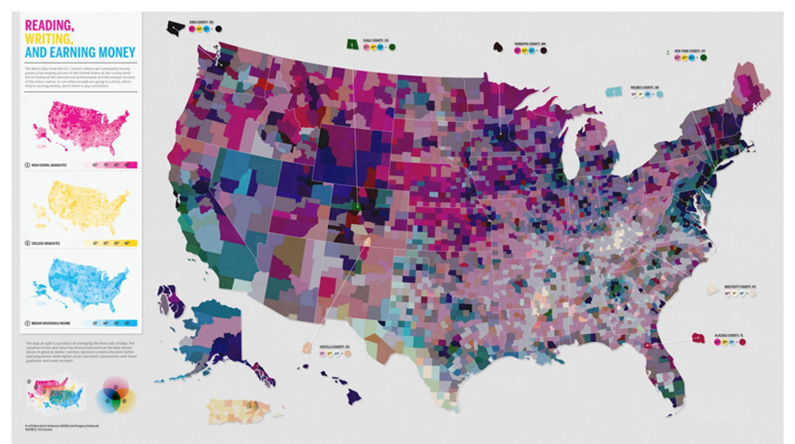
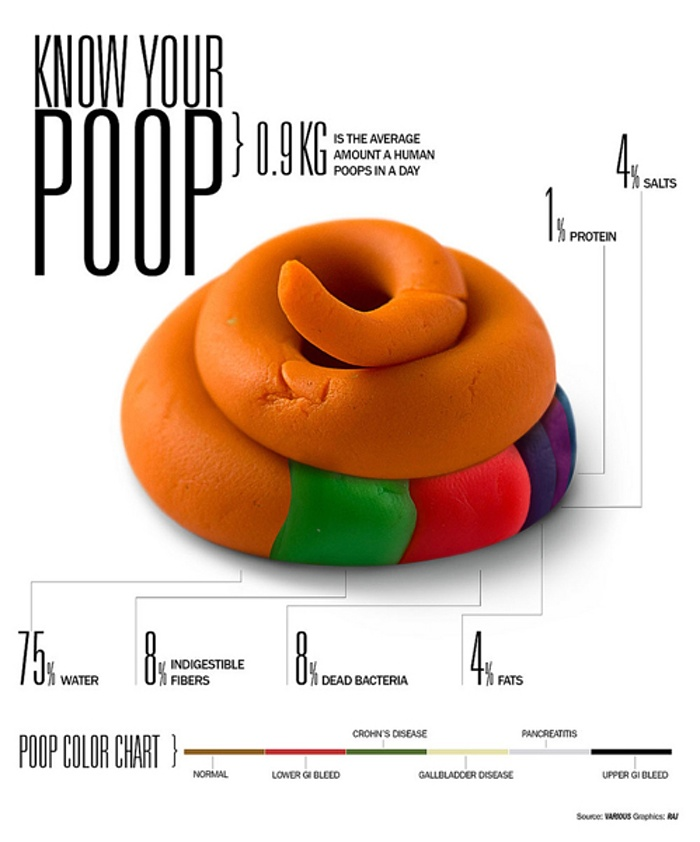
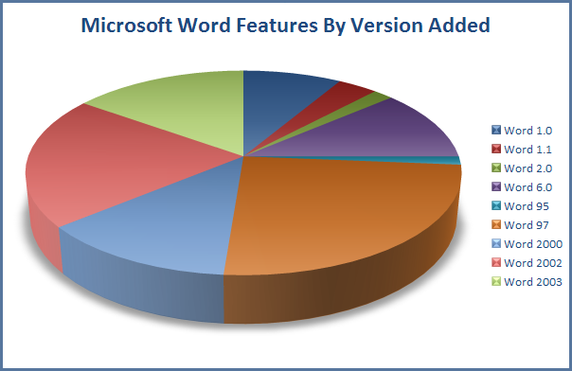

Percentage
Summation
Skewness
Assembling


Headline Numbers Can Mislead With Unfair Comparisons
The December jobs report: with estimated payroll growth of 156,000 and accelerating wage gains -- marks the last full month of what has been a pretty impressive eight-year performance. Despite coming to power in the middle of the worst recession since the 1930s, Obama has presided over the creation of more than 11 million jobs and a 3.1-percentage-point decline in the unemployment rate.
But how does that stack up against other presidencies? Comparisons aren't easy. For one, headline numbers can mislead: The unemployment rate misses people who have stopped looking for work or are stuck in part-time jobs -- forms of labor-market slack that, as Trump has noted, have been acute in recent years. It would thus be helpful to use a measure that takes these things into account.
One candidate is the employment gap. It measures how far the U.S. is from full employment, the point at which unemployment, part-time work and labor-market participation are all at levels that history and analysis suggest are desirable. Borrowing a method developed by economists Andrew Levin and David Blanchflower, I calculated the employment gap going back to 1955 -- enough to cover the past 10 presidencies. The chart is on the right side.


Regression to The Mean Can Reinforce the Conclusion
Supplying dozens of patients with experimental medications and tracking their symptoms over the course of months takes significant resources, and so many pharmaceutical companies develop “stopping rules,” which allow investigators to end a study early if it’s clear the experimental drug has a substantial effect. For example, if the trial is only half complete but there’s already a statistically significant difference in symptoms with the new medication, the researchers may terminate the study, rather than gathering more data to reinforce the conclusion.
We start with ten patients in each group, and gradually collect more data from more patients. As we go along, we do a t test to compare the two groups and see if there is a statistically significant difference between average protein levels. We might see a result like the simulation shown left.
Modern clinical trials are often required to register their statistical protocols in advance, and generally pre-select only a few evaluation points at which they test their evidence, rather than testing after every observation.
Truncated Y-Axis
One of the easiest ways to misrepresent your data is by messing with the y-axis of a bar graph, line graph, or scatter plot. In most cases, the y-axis ranges from 0 to a maximum value that encompasses the range of the data. However, sometimes we change the range to better highlight the differences. Taken to an extreme, this technique can make differences in data seem much larger than they are.
Let’s see how this works in practice. The two graphs left show the exact same data, but use different scales for the y-axis:
On the left, we’ve constrained the y-axis to range from 3.140% to 3.154%. Doing so makes it look like interest rates are skyrocketing! At a glance, the bar sizes imply that rates in 2012 are several times higher than those in 2008. But displaying the data with a zero-baseline y-axis tells a more accurate picture, where interest rates are staying static.

|
Too Many Variables |
Can you figure out what’s going on in this heat map? Neither can we. There are so many layers of information piled on top of each other, and hues so close together they’re totally indecipherable. |
 |
|
Meaningless Designs |
There’s this graphic on poop.Besides the multi-color gross-out factor, there isn’t any reason to put a big turd on this page. It isn’t a pie chart. It isn’t an area chart. |
 |
|
Wrong Choice |
The intention there was to show how many features a given Microsoft Word version has. The pie chart, on the other hand, shows the proportion of features in a particular version as a percentage of the total features in all versions. |
 |